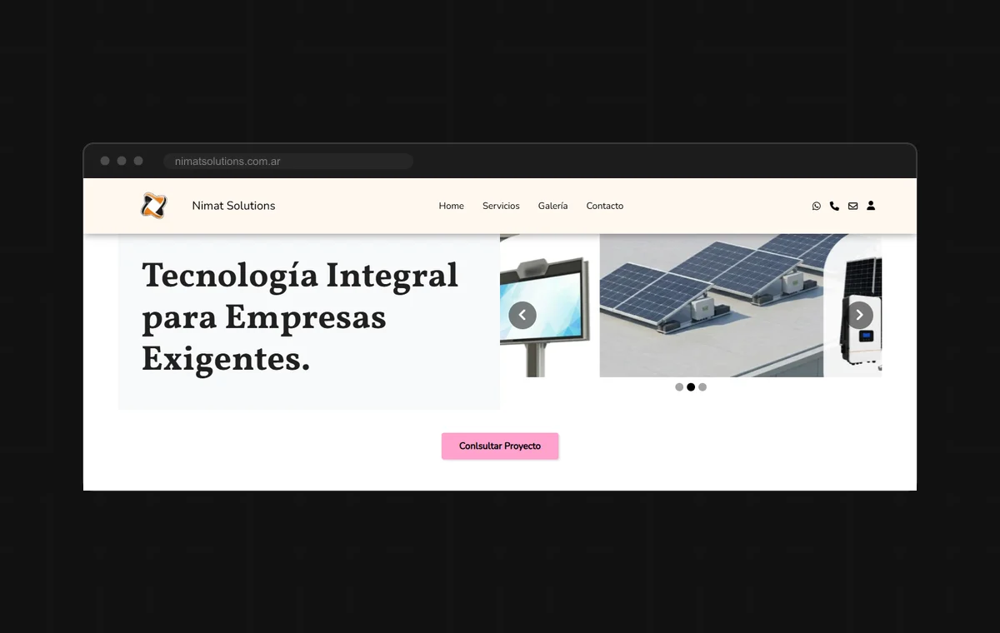

Control de Acceso por DNI
Registro de ingreso a oficinas leyendo el código PDF417 del DNI,
con historial por visitante y exportación a Excel.
Ver caso
Control de Acceso por DNI
Registro de ingreso a oficinas leyendo el código PDF417 del DNI,
con historial por visitante y exportación a Excel.
Ver caso
Trabajo
Proyectos
Sitios web para clientes y sistemas a medida para negocios. En los que tienen página de caso vas a encontrar cómo se trabajó, no sólo el resultado.
Control de Acceso por DNI
Registro de ingreso a oficinas leyendo el código PDF417 del DNI,
con historial por visitante y exportación a Excel.
Ver caso

Nimat Solutions Sitio para una empresa de soluciones informáticas y de seguridad. Diseño y desarrollo completo. Ver casoNo hay proyectos de ese tipo todavía.
¿Querés uno así para tu negocio?
Contame qué necesitás y te respondo con una propuesta concreta.
Hablemos